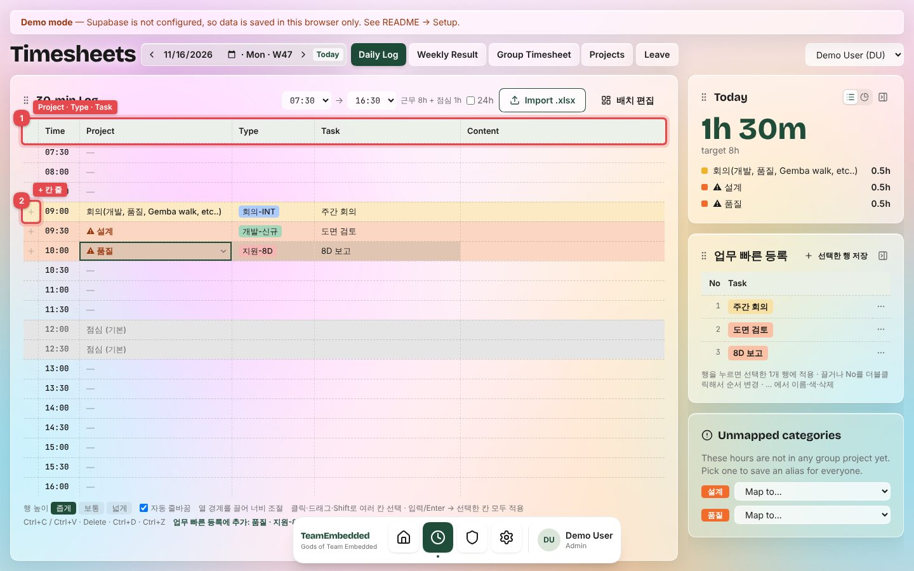
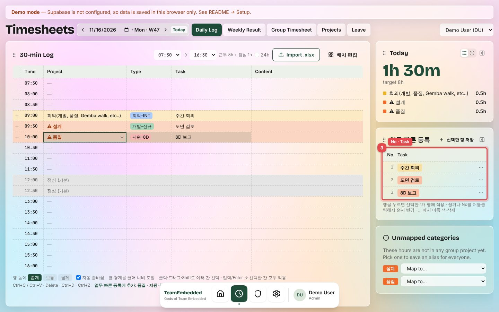
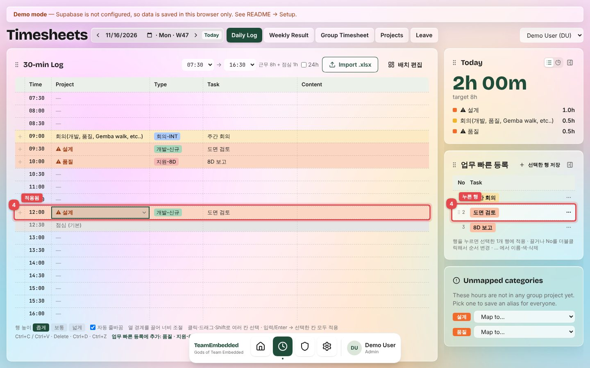
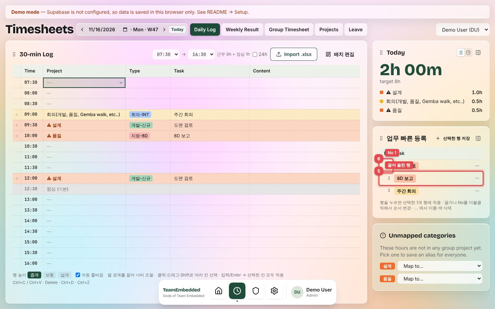
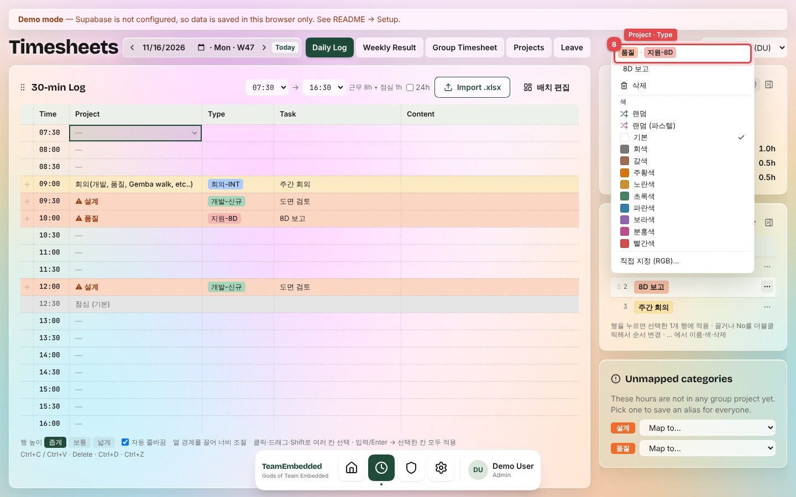
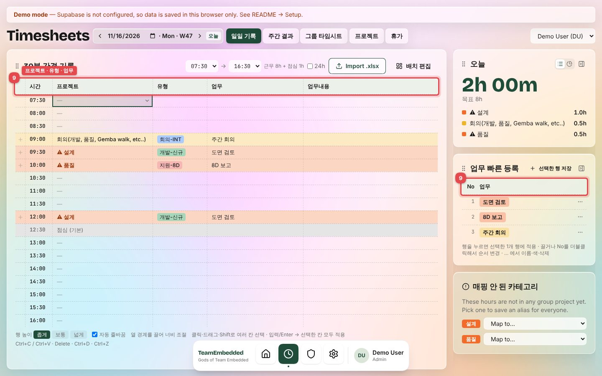

검증 보고서 · E2E
칸 이름을 Project / Type / Task로(한국어 프로젝트 / 유형 / 업무). 행 앞 + 옆에 세로 줄. 반복 업무 … 메뉴 맨 위에 Project · Type. 반복 업무를 표로, 오른쪽 도킹 창에, 번호는 1부터, 끌기와 No 더블클릭으로 순서 변경. (추가 요청) 표에는 No와 Task만, Project · Type은 … 메뉴에서만.
| # | 테스트 케이스 | 기대 결과 | 실제 결과 | 판정 근거 (Assertion) | 결과 | 증적 |
|---|---|---|---|---|---|---|
| 1 | 머리글: Project · Type · Task | Time|Project|Type|Task|Content | Time|Project|Type|Task|Content | 머리글 텍스트 === 'Time|Project|Type|Task|Content' | PASS | 화면 1 |
| 2 | + 칸 오른쪽 세로 줄(머리글과 모든 행) | 19곳 모두 다른 칸 사이 줄과 같음 (1px dashed) | 19곳 모두 '1px dashed' | 머리글·각 행의 + 칸 border-right === 다른 칸 border-left | PASS | 화면 1 |
| 3 | 반복 업무가 No · Task 두 칸 표로, No는 1부터 | 머리글 No|Task, 1번 행 '1 · 주간 회의', No 1,2,3 | 머리글 No|Task, 1번 행 '1 · 주간 회의', No 1,2,3 | thead === 'No|Task' && row1 = ['1','주간 회의'] && No === 1,2,3 | PASS | 화면 2 |
| 4 | 행을 누르면 고른 칸에 적용 | 12:00 행 '설계 · 개발-신규 · 도면 검토' | '설계 · 개발-신규 · 도면 검토' | 12:00 행 Project·Type·Task === 2번 반복 업무 | PASS | 화면 3 |
| 5 | 행을 끌어 맨 위로 | 8D 보고 · 주간 회의 · 도면 검토 | 8D 보고 · 주간 회의 · 도면 검토 | Task 순서 === ['8D 보고','주간 회의','도면 검토'] | PASS | 화면 4 |
| 6 | No를 더블클릭해 1을 입력하면 1번으로 | 도면 검토 · 8D 보고 · 주간 회의 | 도면 검토 · 8D 보고 · 주간 회의 | Task 순서 === ['도면 검토','8D 보고','주간 회의'] | PASS | 화면 4 |
| 7 | 새로 고쳐도 순서 유지 | 도면 검토 · 8D 보고 · 주간 회의 | 도면 검토 · 8D 보고 · 주간 회의 | 새로 고친 뒤 Task 순서가 같음 | PASS | — |
| 8 | … 메뉴 맨 위에 Project · Type | '품질 · 지원-8D', 그 아래 이름 '8D 보고' | '품질 · 지원-8D', 이름 '8D 보고' | option-context === '품질 · 지원-8D' && 이름 칸 === '8D 보고' | PASS | 화면 5 |
| 9 | 한국어 이름: 프로젝트 · 유형 · 업무 | 머리글 시간|프로젝트|유형|업무|업무내용, 반복 업무 No|업무 | 머리글 시간|프로젝트|유형|업무|업무내용, 반복 업무 No|업무 | 두 머리글 텍스트가 기대와 같음 | PASS | 화면 6 |
| 10 | 휴대폰에는 반복 업무 창 없음(입력 창에서 고름) | 창 안 보임 | 안 보임 | !templates-panel.isVisible() | PASS | — |
| 11 | 페이지 오류 없음 | 0건 | 0건 | pageerror 수 === 0 | PASS | — |
빨간 테두리와 번호는 표의 테스트 케이스 번호입니다. 그 요소를 확인해 판정했습니다.





